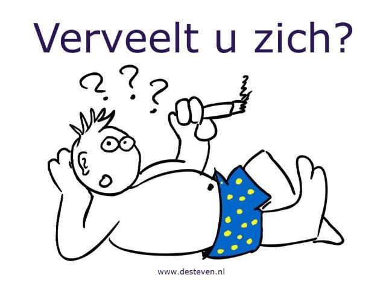

Ga eens naar buiten!
Ga naar buiten. Rijd naar het bos en wandel door de natuur. Een frisse neus halen is gezond en de wandeling zal je goed doen!
Dit kan je helpen!
Ga naar buiten. Rijd naar het bos en wandel door de natuur. Een frisse neus halen is gezond en de wandeling zal je goed doen!
Ben je sportief aangelegd, of wil je graag wat afvallen? Ga dan eens hardlopen! In mijn artikel 'Fit voor de zomer!' lees je hoe je dit aanpakt.
Joch binnen blijven? Kijk dan eens op www.movie2k.to . Hier kan je gratis online de nieuwste films kijken, zonder ook maar iets te hoeven downloaden!
Houd jij van leedvermaak? In dat geval is www.fmylife.com iets voor jou. Hier vind je de leukste verhalen van wat mensen overkomen is.
Bevalt www.fmylife.com je wel? Kijk dan eens op www.9gag.com. Nog een website vol met humor, waar je je wel een tijdje op zal vermaken!
Pak eens een boek uit de kast. Ongetwijfeld heb je nog ongelezen boeken, waar je nog niet aan toegekomen bent. Mooi moment om hieraan te beginnen, toch?
Bel een vriend, vriendin of familielid op om eens bij te kletsen! We hebben allemaal wel vrienden die we eigenlijk al veel te lang niet gesproken hebben! Misschien heeft deze persoon wel zin in een drankje?
Ga het huis opruimen. Nee, het is geen leuke bezigheid, maar je hebt er wel degelijk iets aan! Zet een goed muziekje op en je bent zo klaar!
Kijk eens op www.groupon.nl of www.actievandedag.nl als je een goede aanbieding wilt scoren!
En ten slotte: Doe eens gezond! Zoek een lekker recept op voor een smoothie, haal de ingrediënten en smullen maar!